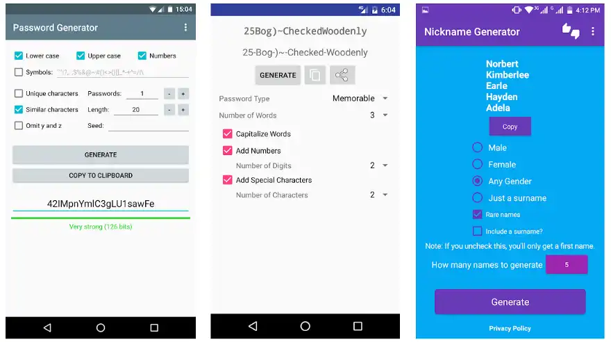
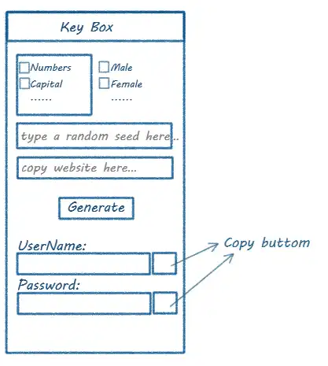
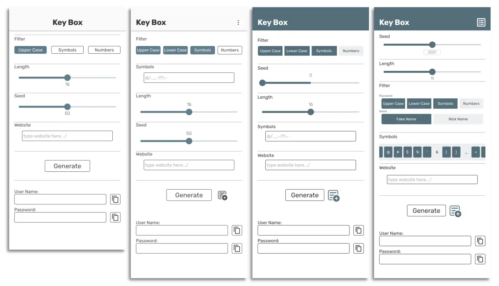

[2020] KEY BOX
Concept:
Key Box is an app to generate usernames and passwords for different webs or apps and copy to use.
Target User:
People who don’t want to use simple passwords on so many websites, and who don’t want to spend time on thinking about new usernames.
Design Precedents
For most password generators, they are too random to remember, if we uninstall this app or lose the files of saved passwords, we might can’t find our passwords back.
-

My Goals:
- Generate random usernames for each website.
- Generate different passwords for different websites to keep your passwords safe, so that if your information on one site is leaked, your password will not be used to access to your accounts on other sites.
- There will be a random seed for your passwords, which means we don’t have to save your passwords in any text, but just save the seed to remember the passwords. The generated passwords won’t be true random.
Interface Design:
The interface will be separated to 3 parts:
- Filters
- The text field to input websites
- A generate button as well as the output containers.
-

Prototypes:
- 
Features:
Fake random passwords and filters
- If you can remember your seed and settings, you can always generate the same password for each website.
- Lists to remember filters as well as toggle Buttons.
- Two parts of the seeds in random generator so that the password will be influenced by both the seed and the website.
Featured website input
- You can copy and paste the website’s link or type the keywords of them, both of these will lead to the same website. Such as “http://www.figma.com/” is equals to “figma”, or even the “https://www.figma.com/file/3FKxTPELUq4fS4uHzwN8t6/Untitled” , which is still the same.
- There is a function to deal with links we typed, which will ignore the “http://www.” or those strings at the end which has no meanings for us.
For fake name generator:
- https://www.scarymommy.com/top-1000-names/
- https://namecensus.com/data/1000.html
Reference:
I copied names from these websites and change the format in Excel to write the json file of names.